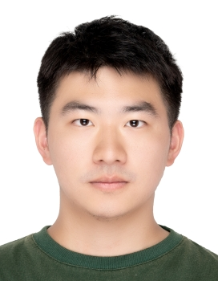

Ao Li (李骜)
|
Ph.D. |
 |
News
Biography
I received my Ph.D. degree in June 2026 from the School of Information and Communication Engineering, University of Electronic Science and Technology of China, jointly supervised by Prof. Le Zhang and Prof. Ce Zhu. I earned my Master's degree from Chongqing University of Posts and Telecommunications and my Bachelor's degree from Chongqing University.
My recent work studies efficient and general-purpose image restoration systems, including all-in-one restoration, image super-resolution, low-light and real-time image enhancement, model compression, and deployment-friendly vision models.
Preprints
-
PASTA: Towards Flexible and Efficient HDR Imaging Via Progressively Aggregated Spatio-Temporal Alignment
Xiaoning Liu, Ao Li, Zongwei Wu, Yapeng Du, Le Zhang, Yulun Zhang, Radu Timofte, Ce Zhu
arXiv preprint, 2024. PDFCitations: daily
Publications
20261 publication
20256 publications
-
Deep-Learning-Empowered Super-Resolution: A Comprehensive Survey and Future Prospects
Le Zhang, Ao Li, Qibin Hou, Ce Zhu, Yonina C. Eldar
-
Towards Real Zero-Shot Camouflaged Object Segmentation without Camouflaged Annotations
Cheng Lei, Jie Fan, Xinran Li, Tianzhu Xiang, Ao Li, Ce Zhu, Le Zhang
IEEE Transactions on Pattern Analysis and Machine Intelligence, 2025. PDFCodeCitations: daily
-
MobileIE: An Extremely Lightweight and Effective ConvNet for Real-Time Image Enhancement on Mobile Devices
Hailong Yan, Ao Li, Xiangtao Zhang, Zhe Liu, Zenglin Shi, Ce Zhu, Le Zhang
International Conference on Computer Vision, 2025. PDFCodeCitations: daily
-
Subspace Constraint and Contribution Estimation for Heterogeneous Federated Learning
Xiangtao Zhang, Sheng Li, Ao Li, Yipeng Liu, Fan Zhang, Ce Zhu, Le Zhang
IEEE/CVF Conference on Computer Vision and Pattern Recognition, 2025. PDFCodeCitations: daily
-
Rethinking Token Reduction with Parameter-Efficient Fine-Tuning in ViT for Pixel-Level Tasks
Cheng Lei, Ao Li, Hu Yao, Ce Zhu, Le Zhang
IEEE/CVF Conference on Computer Vision and Pattern Recognition, 2025. PDFCodeCitations: daily
-
Exploring Frequency-Inspired Optimization in Transformer for Efficient Single Image Super-Resolution
Ao Li, Le Zhang, Yun Liu, Ce Zhu
IEEE Transactions on Pattern Analysis and Machine Intelligence, 2025. PDFCodeCitations: daily
20241 publication
-
NTIRE 2024 Challenge on Low Light Image Enhancement: Methods and Results
Xiaoning Liu, Zongwei Wu, Ao Li, Florin-Alexandru Vasluianu, Yulun Zhang, Shuhang Gu, Le Zhang, Ce Zhu, Radu Timofte, et al.
IEEE/CVF Conference on Computer Vision and Pattern Recognition Workshops, 2024. PDFCitations: daily
Education
- 2022.09 - 2026.06 Ph.D., University of Electronic Science and Technology of China.
- 2017.09 - 2020.06 M.Eng., Chongqing University of Posts and Telecommunications.
- 2013.09 - 2017.06 B.Eng., Chongqing University.
Experience
- 2021.09 - 2022.08 Research Assistant, University of Electronic Science and Technology of China.
- 2020.09 - 2021.08 Researcher, Sinovatio.
Academic Service
- Journals: TPAMI, TIP, TCSVT, TNNLS, TBC, NN, JSTSP, TETCI.
- Conferences: CVPR, ICCV, AAAI, ICME, ICASSP.